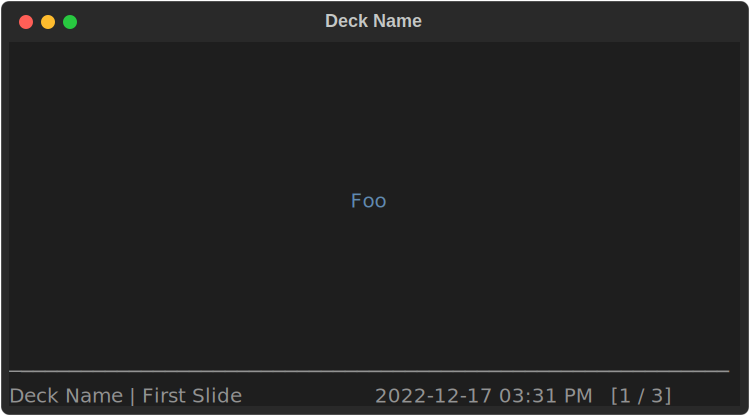
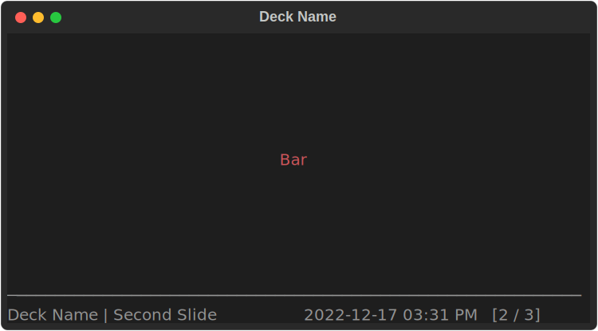
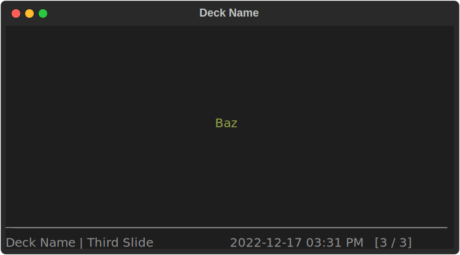
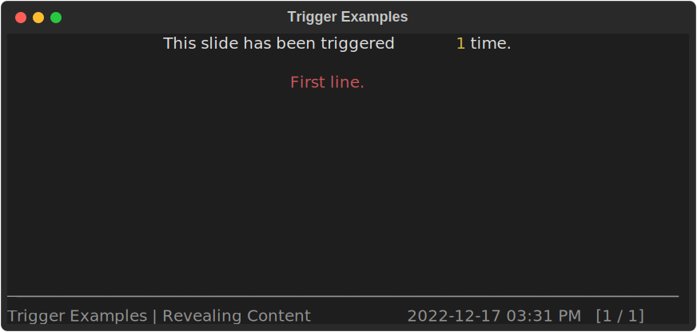
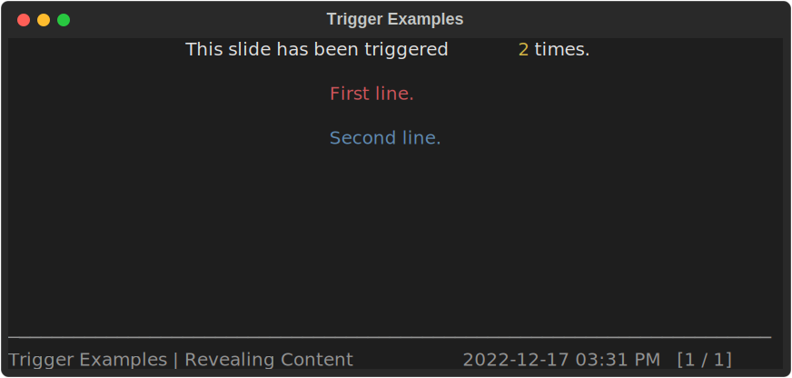
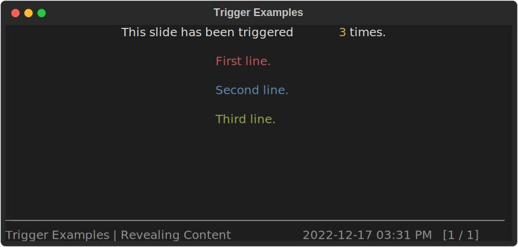
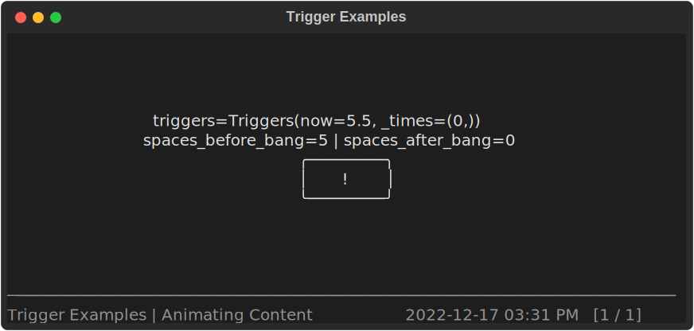

Making Slides
Slide Content Functions
Each slide's content is rendered by calling a "content function" that returns a
Rich RenderableType.
There are two primary ways to define these content functions.
For unique slides you can use the Deck.slide decorator:
from rich.align import Align
from rich.console import RenderableType
from rich.text import Text
from spiel import Deck
deck = Deck(name="Deck Name")
@deck.slide(title="Slide Title")
def slide_content() -> RenderableType:
return Align(
Text.from_markup(
"[blue]Your[/blue] [red underline]content[/red underline] [green italic]here[/green italic]!"
),
align="center",
vertical="middle",
)
You might also find yourself wanting to create a set of slides programmatically
(well, even more programmatically).
You can use the Deck.add_slides function to add
Slides that you've created manually to your deck.
from rich.align import Align
from rich.console import RenderableType
from rich.style import Style
from rich.text import Text
from spiel import Deck, Slide
deck = Deck(name="Deck Name")
def make_slide(
title_prefix: str,
text: Text,
) -> Slide:
def content() -> RenderableType:
return Align(text, align="center", vertical="middle")
return Slide(title=f"{title_prefix} Slide", content=content)
deck.add_slides(
make_slide(title_prefix="First", text=Text("Foo", style=Style(color="blue"))),
make_slide(title_prefix="Second", text=Text("Bar", style=Style(color="red"))),
make_slide(title_prefix="Third", text=Text("Baz", style=Style(color="green"))),
)
  
This pattern is useful when you have a generic "slide template" that you want to feed multiple values into without copying a lot of code. You have the full power of Python to define your slides, so you can use as much (or as little) abstraction as you want.
Slides are added to the deck in execution order
The slide order in the presentation is determined by the order
that the Deck.slide decorator and Deck.add_slides functions are used.
The two methods can be freely mixed;
just make sure to call them in the order you want the slides to
be presented in.
When and how often are slide content functions called?
The slide content function is called for a wide variety of reasons and it is not generally possible to predict how many times or exactly when it will be called due a mix of time-interval-based and on-demand needs.
Here are some examples of when the content function will be called:
- When you move to the slide in Slide view.
- Sixty times per second while the slide is active in Slide view (see Triggers below).
- When you switch to Deck view.
- The active slide's content function will be called if the deck is reloaded.
Tip
Because of how many times they will be called, your content functions should be fast and stateless.
If your content function needs state, it should store and use it via the Fixtures discussed below.
Fixtures
The slide content function can take extra keyword arguments that provide additional information for advanced rendering techniques.
To have Spiel pass your content function one of these fixtures, include a keyword argument with the corresponding fixture name in your content function's signature.
Triggers
- Keyword:
triggers - Type:
Triggers
The triggers fixture is useful for making slides whose content depends either on
relative time (e.g., time since the slide started being displayed)
or where the content should change when the user "triggers" it
(similar to how a PowerPoint animation can be configured to run
On Click).
To trigger a slide, press t in Slide view while displaying it.
Additionally, each slide is automatically triggered once when it starts being
displayed so that properties like
Triggers.time_since_last_trigger
will always have usable values.
The Triggers object in any given call of the content function behaves like an immutable sequence of floats,
which represent relative times (in seconds) at which the slide has been triggered.
These relative times are comparable to each other, but are not comparable
to values generated by e.g. time.time (they are generated by time.monotonic).
Over multiple calls of the content function,
the sequence of relative times is append-only:
any trigger time that has been added to the sequence will stay there until the
Triggers.now is also available,
representing the relative time that the slide is being rendered at.
Triggers are reset when changing slides:
if you trigger a slide,
go to another slide,
then back to the initial slide,
the triggers from the first "instance"
of showing the slide not be remembered.
Trigger.now resolution
Your slide content function will be called every sixtieth of a second,
so the best time resolution you can get is about 16 milliseconds between
renders, and therefore between Trigger.now values.
Revealing Content using Triggers
A simple use case for triggers is to gradually reveal content.
We won't even use the "relative time" component for this:
we'll just track how many times the slide has been triggered.
from rich.align import Align
from rich.console import Group, RenderableType
from rich.padding import Padding
from rich.style import Style
from rich.text import Text
from spiel import Deck, Triggers
deck = Deck(name="Trigger Examples")
@deck.slide(title="Revealing Content")
def reveal(triggers: Triggers) -> RenderableType:
lines = [
Text.from_markup(
f"This slide has been triggered [yellow]{len(triggers)}[/yellow] time{'s' if len(triggers) > 1 else ''}."
),
Text("First line.", style=Style(color="red")) if len(triggers) >= 1 else None,
Text("Second line.", style=Style(color="blue")) if len(triggers) >= 2 else None,
Text("Third line.", style=Style(color="green")) if len(triggers) >= 3 else None,
]
return Group(
*(Padding(Align.center(line), pad=(0, 0, 1, 0)) for line in lines if line is not None)
)
When first displayed, the slide will look like this:

Note that the slide has already been triggered once,
even though we haven't pressed t yet!
As mentioned above, each slide is automatically triggered once
when it starts being displayed.
After pressing t to trigger the slide (really the second trigger):

And after pressing t again (really the third trigger):

Animating Content using Triggers
Let's build a simple animation that is driven by the time since the slide started being displayed:
from math import floor
from rich.align import Align
from rich.console import Group, RenderableType
from rich.panel import Panel
from rich.text import Text
from spiel import Deck, Triggers
deck = Deck(name="Trigger Examples")
@deck.slide(title="Animating Content")
def animate(triggers: Triggers) -> RenderableType:
bang = "!"
space = " "
bar_length = 5
spaces_before_bang = min(floor(triggers.time_since_first_trigger), bar_length)
spaces_after_bang = bar_length - spaces_before_bang
bar = (space * spaces_before_bang) + bang + (space * spaces_after_bang)
return Align(
Group(
Align.center(Text(f"{triggers=}")),
Align.center(Text(f"{spaces_before_bang=} | {spaces_after_bang=}")),
Align.center(Panel(Text(bar), expand=False, height=3)),
),
align="center",
vertical="middle",
)
Here are some screenshots showing what the slide looks like at various times after being displayed, with no additional key presses:
